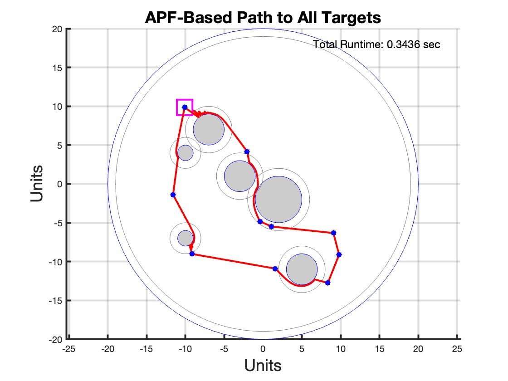
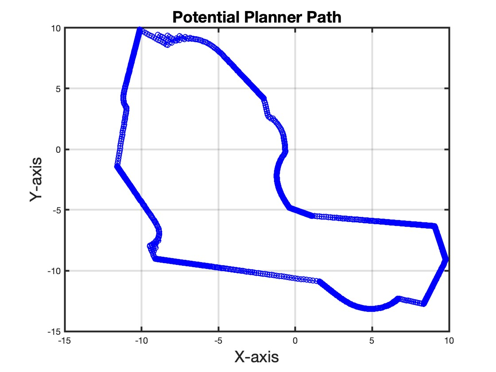
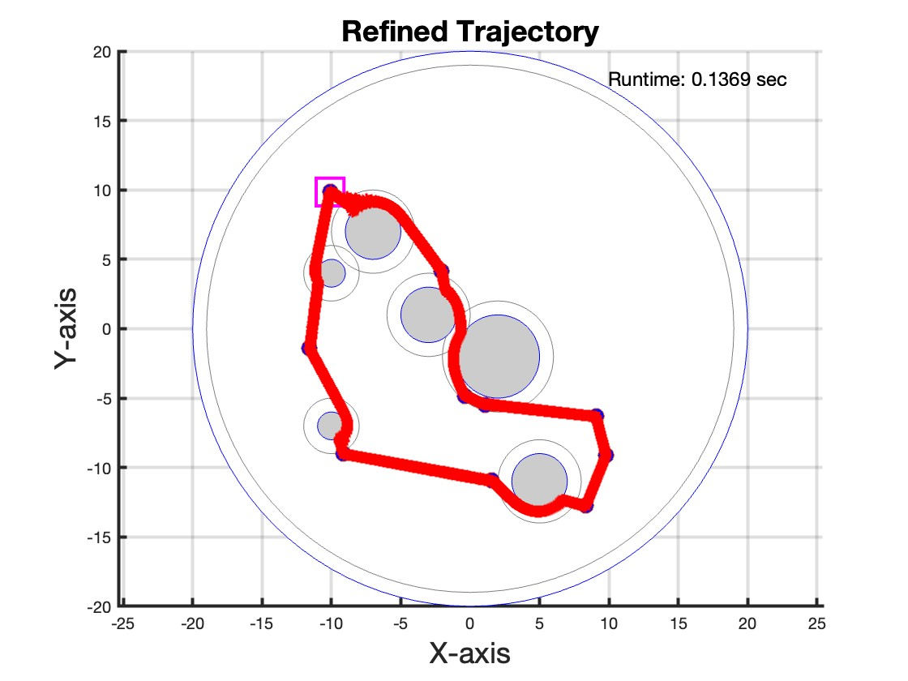
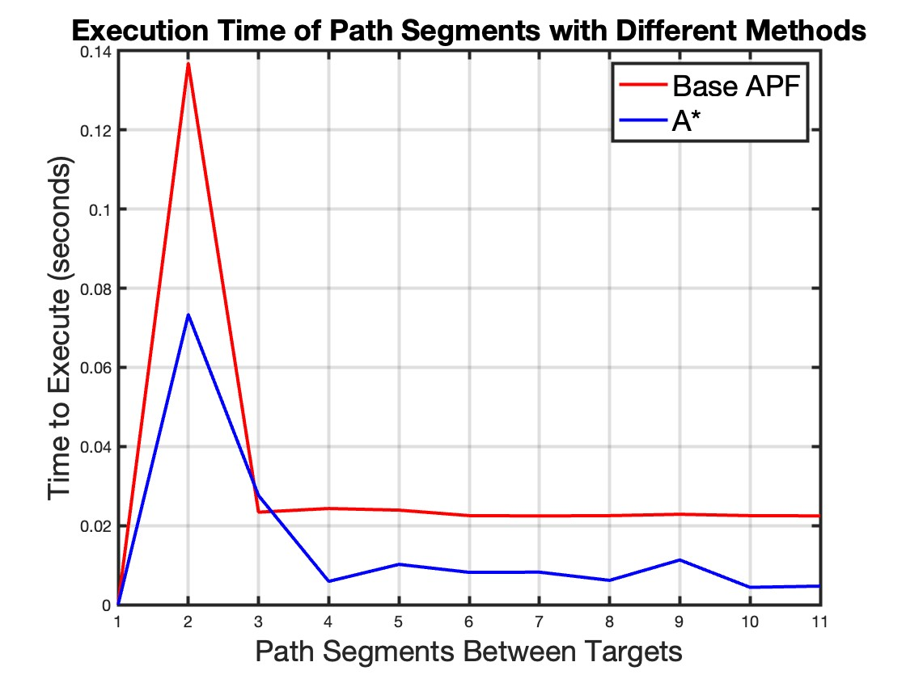
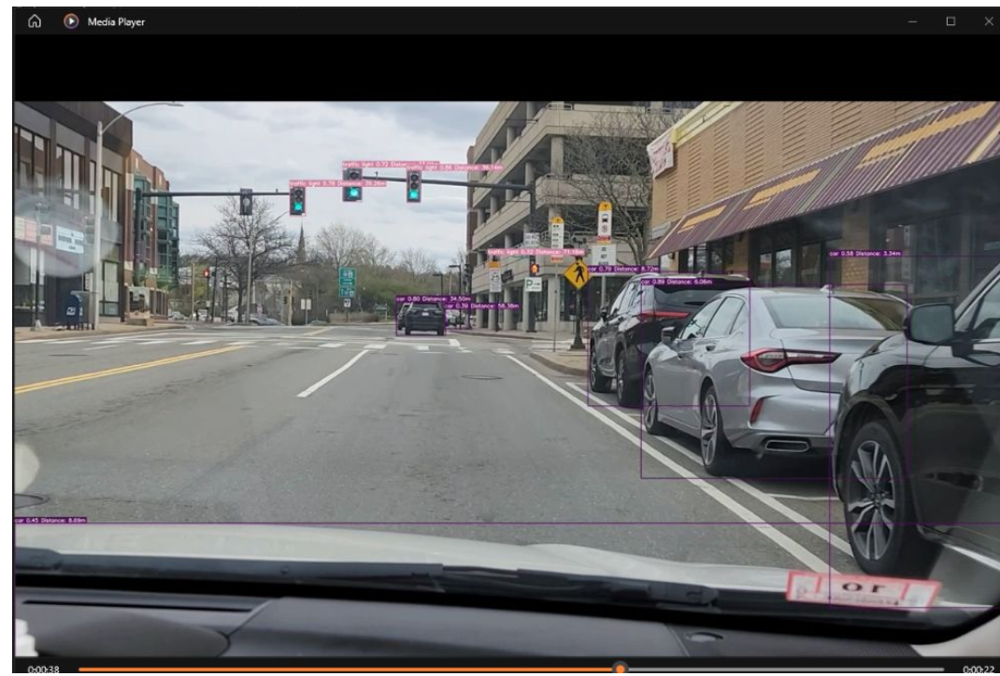
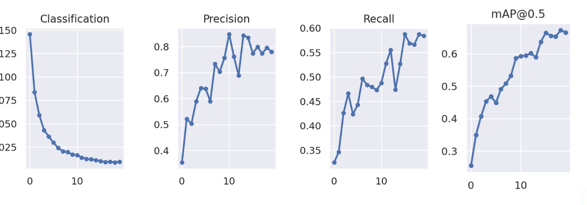

My Projects

APF-MPC Space Debris Rendezvous
An integrated approach using APF and MPC for autonomous space debris collection.
APF-MPC Space Debris Rendezvous
Description of initial A* outputs, showing preliminary results.
Trajectory plot with targets using Artificial Potential field.
Visualization of potential paths planned by the system, highlighting optimal routes and obstacles.
Final refined paths post-MPC adjustment, showcasing efficiency and precision in navigation.
Comparative analysis between APF and MPC methodologies in handling complex trajectories.
Abstract
This project proposes a hybrid Artificial Potential Field - Model Predictive Control (APF-MPC) method that navigates through a known, static space debris field to rendezvous with multiple large target static debris in a singular trip before returning to the start location.
Technologies Used
MATLAB, APF, MPC
Challenges and Solutions
Addressed thruster saturation by optimizing control algorithms to reduce fuel consumption while maintaining maneuverability.
Results
Improved trajectory optimization, enhanced fuel efficiency, and superior operational efficiency compared to conventional methods.
View on GitHubAdvanced Text Classification Techniques
Abstract
This study explores and compares traditional machine learning and advanced deep learning techniques in text classification, highlighting the superior performance of BERT-based models over conventional models like Logistic Regression and SVM.
Technologies Used
Logistic Regression, SVM, BERT embeddings, LoRA fine-tuning, LSTM networks, CNNs.
Challenges and Solutions
One of the main challenges was integrating and fine-tuning BERT models for specific text classifications which required substantial computational resources. This was addressed by optimizing the training process and selectively fine-tuning layers to balance performance and computational efficiency.
Results
The application of BERT embeddings significantly improved model accuracy in complex text classification tasks, demonstrating deep learning's potential over traditional methods in capturing nuanced language patterns.
View on GitHubDistance Measurements for Real Time Vehicle Detection
Abstract
This project introduces a cost-effective method for enhancing vehicle safety by providing real-time distance measurements using a standard dash-cam. By integrating advanced object detection models, this system allows any vehicle, regardless of its manufacturing date, to have sophisticated traffic awareness capabilities.
Technologies Used
The system utilizes YOLOv7 for object detection, which is integrated with dash-cam footage to detect vehicles and estimate distances based on the dimensions of their bounding boxes.
Challenges and Solutions
Major challenges included optimizing the object detection model for real-time processing and achieving accurate distance measurements from monocular video footage. Solutions involved fine-tuning the YOLOv7 model on vehicle-specific datasets and developing a calibration method to convert pixel measurements into real-world distances.
Results
The enhanced detection system successfully provides accurate distance estimations, significantly improving situational awareness for drivers. Comparative tests demonstrated that the system performs reliably across different vehicle types and under various environmental conditions.
Image results.
Analytical results.